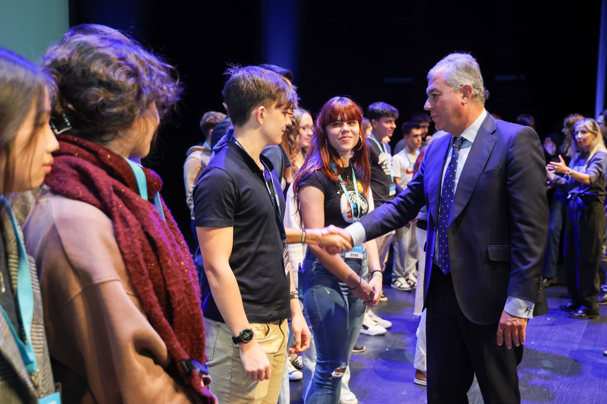

Sputnik
The Sputnik Conference, held in Seville and created by Juan Martínez Barea, is a transformative event designed to inspire and empower young entrepreneurs. Taking place annually, it targets individuals aged 16 to 30, encouraging them to develop their leadership potential through exposure to exponential technologies like AI, biotechnology, and robotics. This intensive program, supported by the Fundación El Mundo Que Viene, aims to shape the next generation of leaders by fostering ambition, vision, and entrepreneurial spirit.
In 2023, I had the opportunity to attend, which significantly influenced my personal and professional growth. The event features a series of seminars and talks by successful entrepreneurs, scientists, and innovators, offering participants the chance to engage with cutting-edge technologies and global leaders. The conference serves as a gateway for young talents to network with investors and start-ups, equipping them with the tools to create the future’s most impactful companies.
- Year
- 2023

Next: AI Mouse